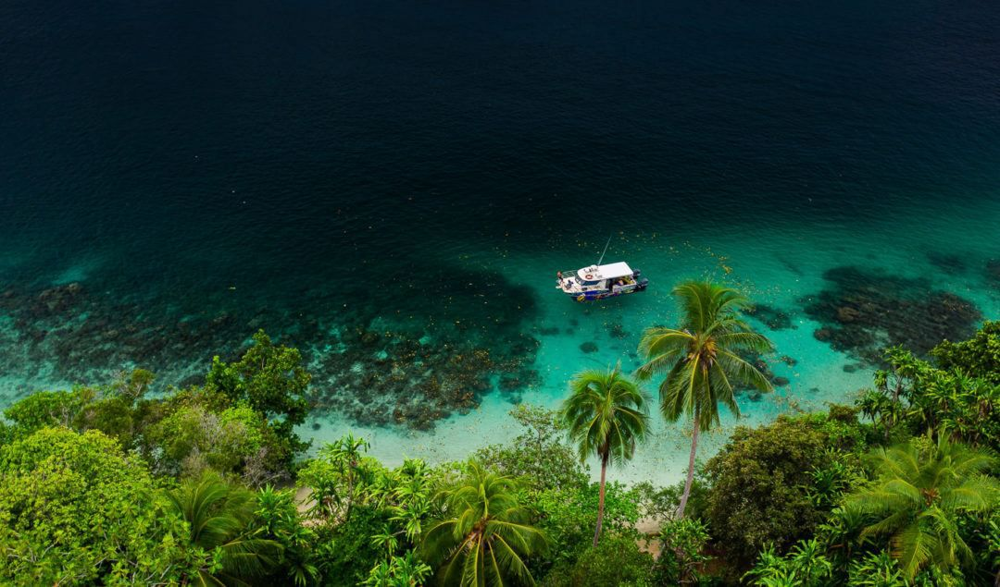
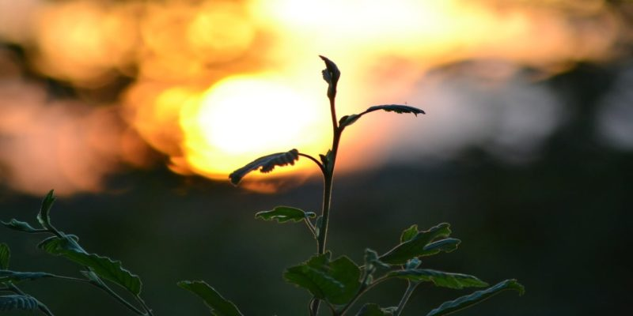
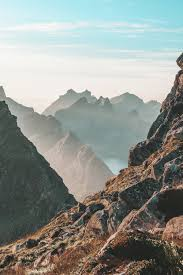

Amazing river of the netherlands facinating view captures the eye of the observer with a captivating look
Morning sign on a beautiful beach of brazil that is found at the entrance alongside the great tourist views welcomes people to the area
Best sky light on the coast of japan looks amazing skylight can be seen at the Palace of Versailles in the Galerie des Batailles, which was added onto the existing palace by Louis Philippe in the year 1830. Another form that displays early sky lighting technology
 
Brazil best beach Brazil, officially the Federative Republic of Brazil, is the largest country in both South America and Latin America. At 8.5 million square kilometers and with over 211 million people, Brazil is the world's fifth-largest country by area and the sixth most populous.
Flower, sometimes known as a bloom or blossom, is the reproductive structure found in flowering plants (plants of the division Magnoliophyta, also called angiosperms). The biological function of a flower is to affect reproduction,
Plant cells have cell walls, constructed outside the cell membrane and composed of cellulose, hemicelluloses, and pectin. Their composition contrasts with the cell walls of fungi, which are made of chitin, of bacteria, which are made of peptidoglycan and of archaea, which are made of pseudopeptidoglycan. In many cases lignin or suberin are secreted by the protoplast as secondary wall layers inside the primary cell wall


Long Mountains.The Himalayas, or Himalaya, is a mountain range in Asia separating the plains of the Indian subcontinent from the Tibetan Plateau. The range has many of Earth's highest peaks, including the highest, Mount Everest.
Adventure is an exciting experience that is typically a bold, sometimes risky, undertaking. Adventures may be activities with some potential for physical danger such as traveling, exploring, skydiving, mountain climbing, scuba diving, river rafting or participating in extreme sports.
Beautiful Mountains Nepal. In Nepal, once-in-a-lifetime experiences and breathtaking landscapes go hand in hand. Home to eight of the world's 10 tallest mountains (including Mount Everest, the highest point on earth), the country is famous among hikers and adventure seekers.
Developed by kirubel